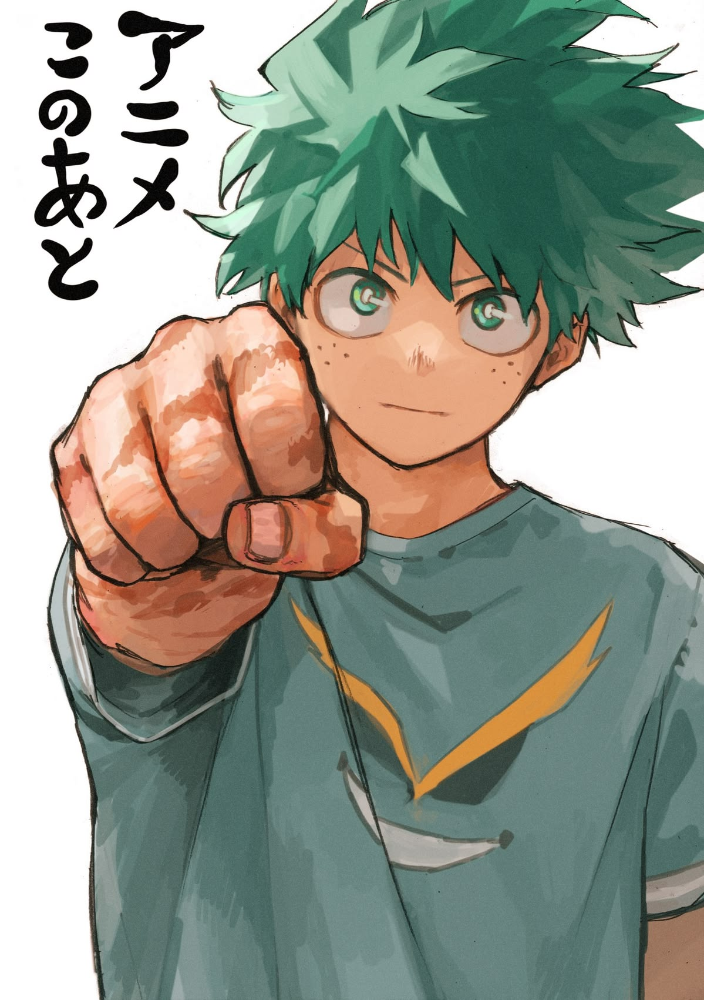

Quem é Izuku Midoriya?

Izuku Midoriya, também conhecido pelo seu nome de herói "Deku", é o protagonista da obra Boku no Hero Academia (My Hero Academia).
Ele nasceu em um mundo onde quase todas as pessoas possuem superpoderes (chamados de individualidades), mas ele nasceu completamente sem nenhum poder. Mesmo sendo desacreditado por todos, sua determinação inabalável e o desejo genuíno de ajudar as pessoas com um sorriso chamaram a atenção do maior herói do mundo, All Might, tornando-o seu sucessor.
Por que ele me inspira?
Midoriya me inspira principalmente pela sua resiliência e ética de trabalho. Ele demonstra que o verdadeiro valor não vem de talentos natos ou vantagens Iniciais, mas sim de:
- Estudo constante, análise e estratégia antes de agir;
- Capacidade de se levantar e continuar tentando, mesmo após falhas extremas;
- Empatia e vontade de estender a mão a quem precisa de ajuda.
Citações Marcantes
Algumas das frases mais emblemáticas ditas pelo personagem ao longo do anime e mangá:
"Interferir quando não é necessário é a essência de ser um herói."
"Não importa o quanto você caia, o que realmente importa é se levantar mais uma vez e continuar em frente."
Saiba mais
Para ler mais sobre a história, habilidades e desenvolvimento do personagem, visite a página oficial do Izuku Midoriya na Fandom Wiki.